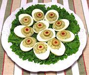

|
Picante Stuffed EggsItaly - Uova Piccante | ||||
| Serves: Effort: Sched: DoAhead: |
6 app *** 1-/2 hr Yes |
"Picante" does not mean chili hot for this dish, it means having a slightly tart pickle flavor from the gherkin, capers and olive. | |||
|
|
6 ------ 6 1/4 2 1 4 3/8 1 1/4 1/4 ------ 6 |
--- oz c T c t t t --- |
Eggs, ExL -- Stuffing can Tuna (1) Parsley Capers (2) Gherkin (3) Anchovies (4) Mayonnaise Mustard Worcestershire Pepper -- Garnish Stuffed Olives |
Note: The recipe makes quite a bit more stuffing than will fit in the eggs, so you can either boil another 3 or 4 eggs and not use their yolks or spread the extra stuffing on toast, and garnish. Make - (1-1/2 hr - 25 min work)
|